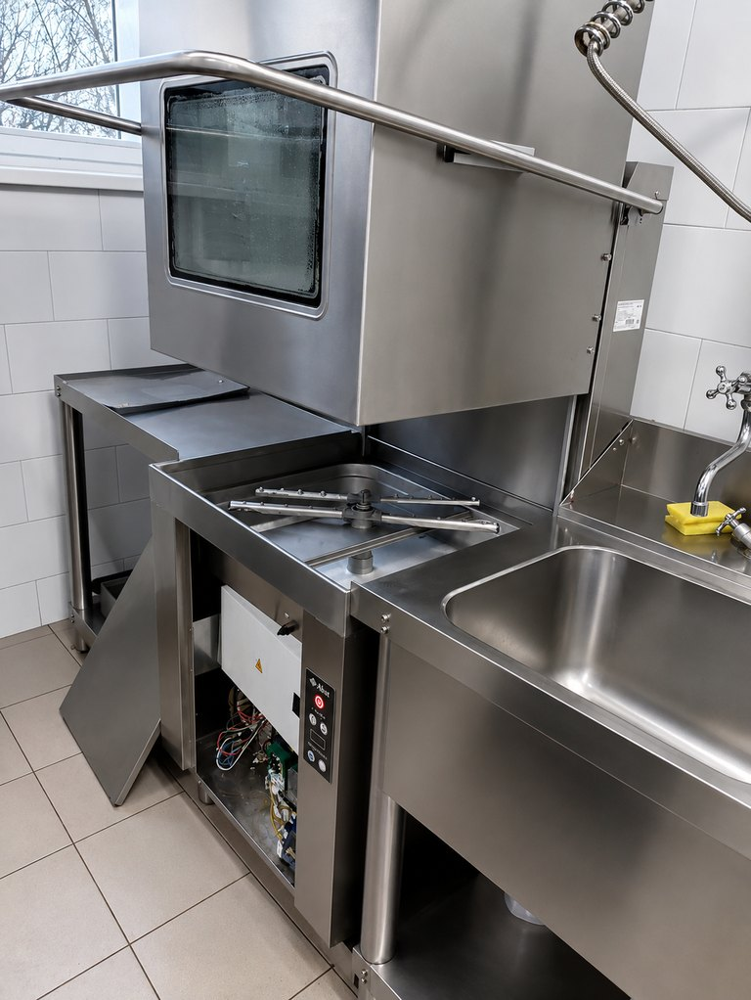
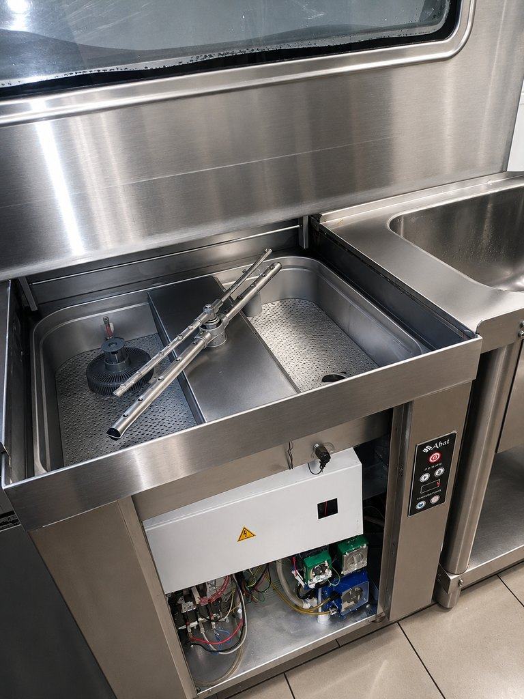
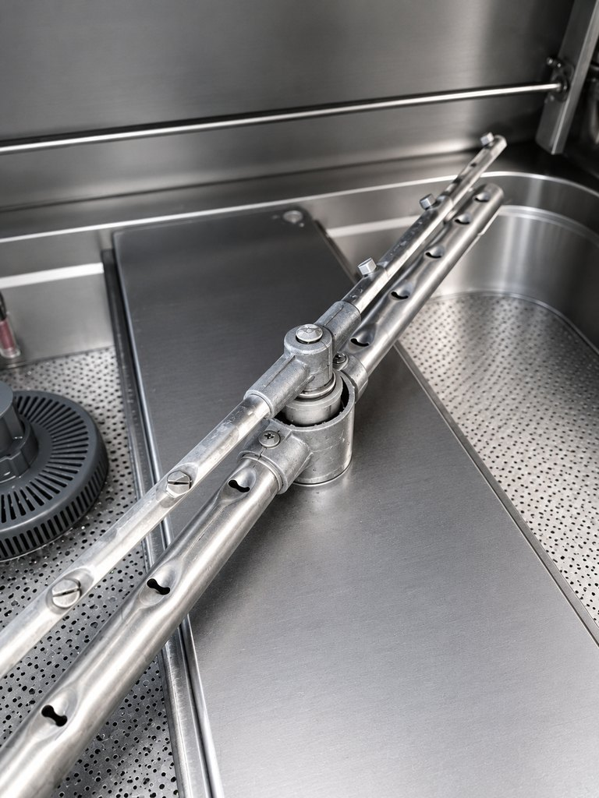
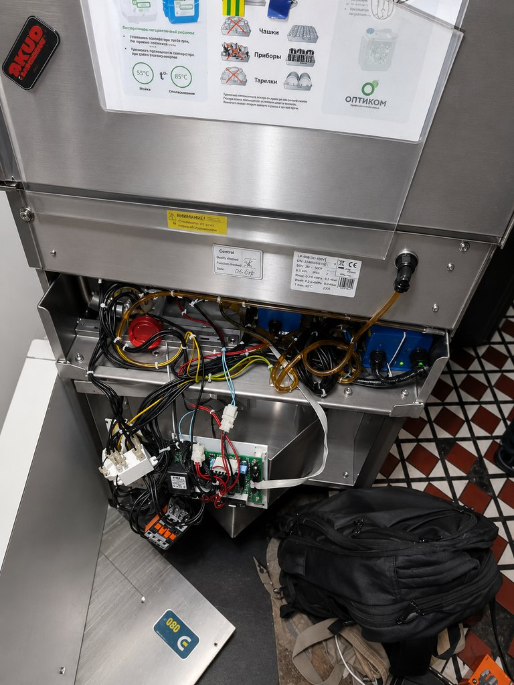

Обслуживание
Очистка фильтров и рукавов, контроль накипи, дозаторов и соединений.
Ремонт оборудования моечной зоны
Диагностируем машину по этапу цикла: наполнение, нагрев, мойка, ополаскивание и слив. До разборки фиксируем модель, симптом и условия отказа.
Оборудование и сервисный доступ
Фотографии показывают рабочую зону, моечную камеру, разбрызгиватель и внутренний сервисный отсек. Они помогают обозначить тип оборудования и узел, но не заменяют осмотр конкретной модели.




Изображения обработаны для повышения наглядности. Мелкая геометрия, маркировка и взаимное положение небольших деталей могут отличаться от исходных фотографий; для измерений, электрических подключений и дефектовки используют фактический осмотр и документацию конкретной модели.
Технический контекст
Профессиональная посудомоечная машина работает как связанная система: водоснабжение и уровень, нагрев бака и бойлера, циркуляционный насос, моечные и ополаскивающие рукава, дренаж, дозаторы химии и защитные блокировки.
Фронтальная, купольная и конвейерная машина отличаются компоновкой и производительностью, поэтому одинаковый пользовательский симптом не означает одинаковую неисправность. Диагностика начинается с типа машины, модели и этапа цикла.
Очистка фильтров и рукавов, контроль накипи, дозаторов и соединений.
Измерения температуры, давления, токов, сигналов уровня и работы насосов.
Нет набора, нет слива, перелив, слабое давление и протечки.
Температура, химия, вода, загрузка кассеты и состояние форсунок.
Порядок проверки
Зафиксировать тип машины, производителя, модель и серийный номер.
Указать, на каком этапе возникает сбой: наполнение, нагрев, мойка, ополаскивание или слив.
Записать код или текст сообщения без попытки трактовать его по другой серии.
При протечке возле электрики, запахе гари или повторном срабатывании автомата обесточить оборудование.
Матрица диагностики
| Контур или узел | Проявление | Что проверяется |
|---|---|---|
| Водоснабжение | Машина долго наполняется или не выходит в готовность | Давление, фильтр, клапан, датчик уровня |
| Нагрев | Цикл блокируется или температура ниже заданной | ТЭН, бойлер, датчики, контакторы |
| Циркуляция | Посуда остаётся грязной, рукава вращаются медленно | Фильтры, насос, форсунки, давление |
| Слив | Вода остаётся в баке или уровень растёт | Перелив, шланг, насос, клапан, датчик |
| Дозирование | Пена, разводы, слабый результат мойки | Канистры, трубки, помпы, настройки дозы |
Связанные страницы
Заявка на диагностику
Чем точнее указаны модель, код и момент остановки цикла, тем быстрее можно подготовить диагностический сценарий.
8 (999) 005-71-72Устройство, коды и процедуры применяются только в пределах указанных серий и моделей.
Разбор цикла, насосов, нагрева и датчиков.
FAQ
Фронтальные и подстольные, купольные, стаканомоечные, кассетные и другие профессиональные машины. Возможность работ уточняется по модели и шильдику.
Код полезен только вместе с брендом, серией и моделью. Одинаковые обозначения у разных производителей могут иметь разное значение.
Фото шильдика, панели, места подключения воды и слива, описание этапа отказа и короткое видео цикла, если запуск безопасен.
Диагностика оборудования на объекте, демонтаж и маркировка модуля, компонентный ремонт, стендовая проверка и установка обратно.